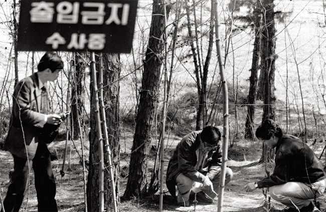

The Hwaseong Serial Murders are an unsolved serial murder case that occurred in the South Korean city of Hwaseong between September 15, 1986 and April 3, 1991. In each case, a woman or girl was found bound and murdered. The murders are considered to be the most infamous in the modern history of South Korea and have been compared to those of the Zodiac Killer. In South Korea, statute of limitations for murder is 15 years. So even if the killer is caught after the limitation time, can't be charged and punished. For this case, ran out in April 2, 2006. The files have kept by the police and they said will get to the bottom of this regardless of the limit also investigation keep running. Material evidence, such as semen samples from victims, hair and cigarette butts, were collected, but all failed to pinpoint the identity of the killer.
It is now legally impossible to bring the uncaught killer to justice since the statute of limitations has already passed on the case. According to Kwon, a case turns cold either because it was investigated during a time when the nation lacked profiling skills or the investigation process is prolonged to prevent wrongful conviction. “Cases like the Hwaseong serial killings went cold because of dated forensic technology,” said Kwon. The late 1980s and early 1990s were when a sharp shift in crime motivations occurred, as fast changes in society and the economy left behind people at the margins of society, but the authorities failed to adapt to the times, he noted.
More than a decade after the Hwaseong case, renowned director Bong Joon-ho made a film loosely based on the sequence of events. “Memories of Murder” (2003) attracted 5.3 million moviegoers nationwide and added more notoriety to the controversial case. Recent hit South Korean dramas, such as tvN’s “Signal” and OCN’s “Tunnel,” have also brought back nauseating memories from times when the nation has been shocked by horrendous questions that remain unanswered to this day. Both have time traveling as their main plot device, which seems to reflect the desire of many to solve cases that remain frozen in time. Recently, cold case teams within police departments have been focusing on reopening files that have been buried in dust.
Unsolved cases from the early 2000s were brought back with the hope of discovering new evidence through advanced technology. Another mysterious rape and murder of a 17-year-old girl that happened in South Jeolla Province in 2001, called the “Dedeul River case,” is an example of a case that was reopened with successful results. Police focused on reanalyzing DNA data extracted from retained semen samples along with new evidence found in the archives.
A 40-year-old man surnamed Kim, who was already serving in prison on charges of robbery and murder, was resentenced to life in prison for his past wrongdoing. Kwon said that it is crucial to keep an open mind when reinvestigating a case and recommended minimized exposure to outdated records which can distract one from producing fresh theories. “The original files could hold error s which can sidetrack investigators from seeing the truth.” He added that modern-day cold cases sometimes derive from complacent attitudes such as the police not taking disappearance reports seriously. Kwon also emphasized the importance of patience and heading in the right direction when pursuing a reopened cold case. “Solving a cold case is not only about the results, but the process itself,” said Kwon. “When a case is finally solved after a period of stagnation, then there is nothing better than that.”
There are total of 10 murder from 1986 to 1991.
| Crime | Date | Location | Victim | Statute of limitations |
|---|---|---|---|---|
| 1 | September 15, 1986 | Hwaseong, Annyeong-ri(Now Hwasan-dong pastures) | Lee Wan Im(71 y.o) | September 15, 2001 |
| 2 | October 20, 1986 | Hwaseong, Jinan-ri(Now Jinan-dong) canal | Park Hyun Suk(25 y.o) | October 19, 2001 |
| 3 | December 12, 1986 | Hwaseong, Annyeong-ri(Now called Hwasan-dong) embankment | Kwon Jung Bon(25 y.o) | December 11, 2001 |
| 4 | December 14, 1986 | Jeongnam-myeon, Gwanhang-ri canal | Lee Kye Sook(23 y.o) | December 13, 2001 |
| 5 | January 10, 1987 | Hwaseong, Hwanggye-ri(now Hwasan-dong) rice paddy | Hong Jin Young(19 y.o) | January 9, 2002 |
| 6 | May 2, 1987 | Hwaseong, Jinan-ri(now Jinan-dong) | Park Eun Joo(29 y.o) | May 1, 2002 |
| 7 | September 7, 1987 | Paltan-myeon, Gajae-ri canal | Ahn Gi Soon(54 y.o) | September 6, 2003 |
| 8 | September 16, 1988 | Hwaseong, Jinan-ri(Now Jinan-dong) house | Park Sang Hee(14 y.o) | July 27, 1989, Yoon-mo(22 y.o) was arrested |
| 9 | November 15, 1990 | Hwaseong, Byeongjeom-dong(Now Byeongjeom 1(il)-dong) hill | Kim Mi Jung(14 y.o) | november 14, 2005 |
| 10 | April 3, 1991 | Dongtan-myeon, Bansong-ri(Now Dongtan 1-dong) hill | Kwon Soon Sang(69 y.o) | April 2, 2006 |